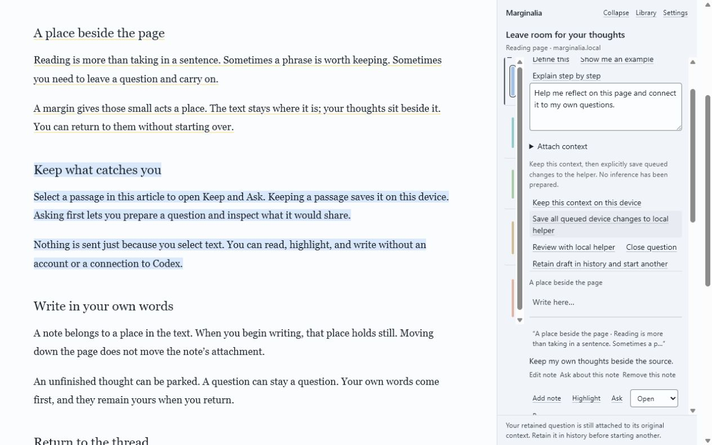
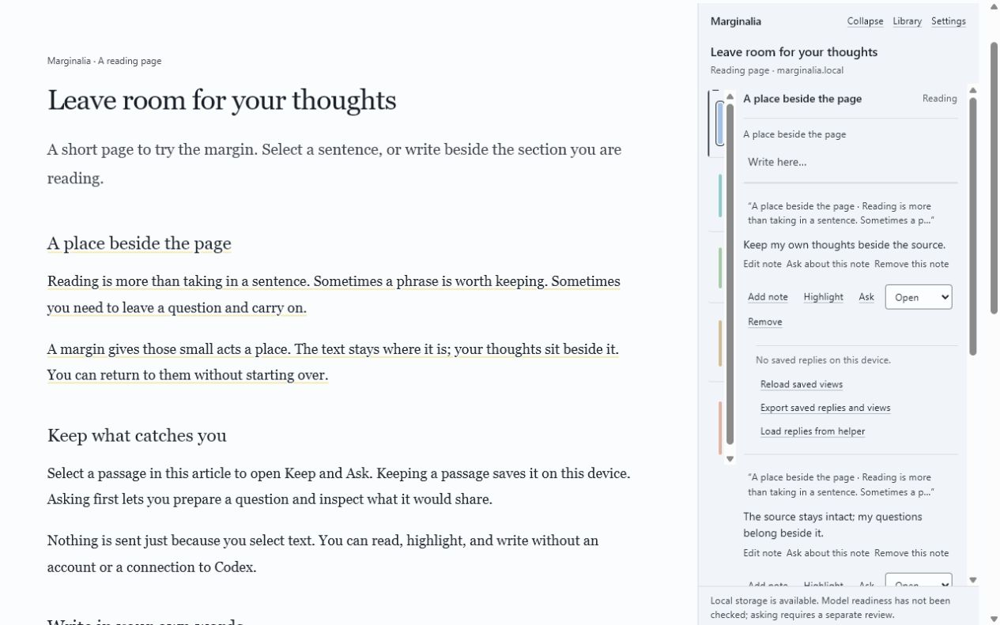

Select any sentence on this page. The margin beside you is a demo. The real one opens in Chrome's side panel.
The demo, on this page
One hard sentence, six ways to read it.
This sentence comes from OpenAI's post on the Navier-Stokes equations. Click a word in it to replay the definition the margin gave on 18 September 2026, or choose one of the six kinds below.
The development of a would have to happen despite the presence of , which tends to smooth out motion.
Start with Simulate it. The sliders in the reply run for real in your browser, and the model says plainly that it does not solve the Navier-Stokes equations.
What it does
Four kinds of reading.
The replies on this page are recorded.
Learn
Click a hard word. A definition written for this passage arrives in under four seconds.
Understand
Turn a passage into a live simulation, a diagram, a worked example, or the steps.
Research
Get a shelf of what to read next, with every source linked.
Reading journeys
Save interactive journeys, annotations, highlights and bookmarks. Pick up any page where you left it.
A reading, end to end
How an hour with a hard page goes.
You meet a page you cannot follow.
The margin opens beside the text and preserves the source page. Instant help starts on and prepares allowed page text through your Codex subscription; onboarding and Settings let you turn it off.
You click the word that blocked you.
A short definition written for this passage arrives in the margin.
You ask the passage for a model you can move.
The reply carries sliders, a curve and the plain statement of what it does not prove.
You write down what you think.
Select any sentence on this page, choose Note, and your words save beside the sentence that prompted them. Your note sits above the reply.
You run out of time and keep the page for later.
Reading it later keeps your place along with your highlights, notes and replies.
You come back and pick it up.
The Library holds what you kept, with search and the source beside every passage.
Yours
Your sign-in, your disk, your work.
Your own Codex sign-in
Help runs through the Codex you already have. There are no API keys to paste and no account to make here.
Notes and highlights stay on your disk
Kept passages, notes and replies collect in a local library with the source beside them. Search it, group it into journeys, and export your work as plain files.
Sites you exclude never send anything
You can exclude a site in Settings. An excluded site sends nothing. On an excluded site the margin shows no Ask controls at all.
Forget a page whenever you want
In the extension, Forget this page clears prepared help while keeping your notes, highlights and saved threads. The website demo has a broader reset: it clears this demo page and its local demo library.
Open source
The code is MIT licensed and public. Read the privacy page for what leaves your machine and when.
How Ask works
A full Ask sends an approved passage and your note through your own Codex sign-in. There are no API keys. A reply can be a definition from the page, an example, a derivation, a diagram, connections to other reading, or a small working model with a slider.
For a full Ask you review the exact outgoing text and recipient before it goes. Excluded sites never send anything. No Codex credential is stored in the browser.
Instant help is on by default. It sends each allowed open page to Codex so quick definitions and simple explanations are ready when you select text, using your own Codex subscription. You can turn it off during onboarding or in Settings, and you can exclude sites. Excluded sites never send anything.

Draft a question beside the selected passage. It stays on this device until you review and approve it.
The Library holds what you kept, and you can search it. Search has passed automated tests. It has not yet been checked by hand in Chrome.
Your note stays with its source
Select a passage. Keep a highlight, write a note in your own words, or choose Ask. Notes stay attached to their source, with replies beneath them. The page is never rewritten.

Your note stays beside the passage that prompted it.
Mark a passage or thread to read later and return to a resume line that says where you were. Your highlights come back when the page still matches what you marked. If the page has changed, the margin says the highlight no longer fits. Removing a passage can be undone, and the removed item stays listed under that passage.
Honest limits
This is an alpha built by one developer. It works in Chrome and needs Codex installed and signed in. There is no phone app and no sync.
Each full Ask shows the outgoing text for review before dispatch. The first request on a site also asks for your site choice. You choose this time, always here, or never here, and you can change that in Settings. Install has been tested on Windows. On macOS and Linux the install scripts pass automated checks, but nobody has run them by hand yet. Read the runtime conditions.
The Astra build
Yash Gurbani builds Marginalia as a team of one for the Product Hunt Astra 6 Challenge.
Research and credits
ScholarPhi (Head et al., CHI 2021) showed definitions beside the text. Marginalia uses no ScholarPhi code. It borrows the idea of putting a definition next to the sentence that needs it. The Semantic Reader project (Lo et al., 2023 preprint, published in 2024) is part of the same research lineage.
18 September 2026: the current build is v1.1. It includes instant definitions and the live model.
Unzip the download.
Open chrome://extensions in Chrome.
Turn on Developer mode.
Choose Load unpacked and select the extension folder.
Download the source package as well, or clone the repository. Open marginalia-v2-package and run .\scripts\install-helper.ps1 in PowerShell on Windows, or bash scripts/install-helper.sh on macOS or Linux. Node 24 is required.
Open http://127.0.0.1:43120/. In the local reader Settings, choose Show pairing code. On a readable page in Chrome, open Marginalia and select a passage. In the browser margin Settings, enter the code and choose Pair. For an embedded margin, choose Open browser margin first.